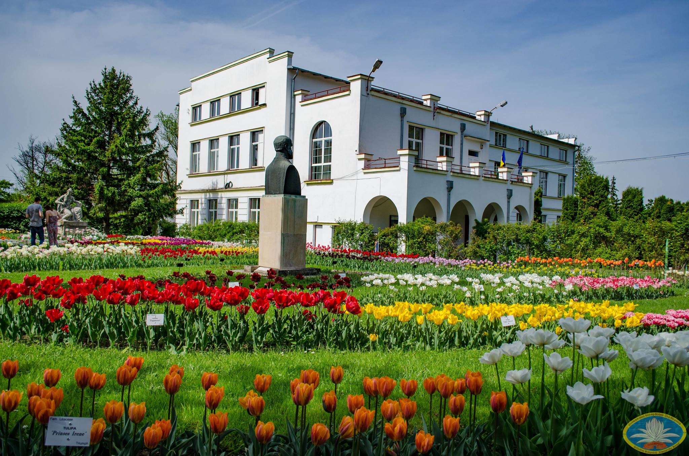
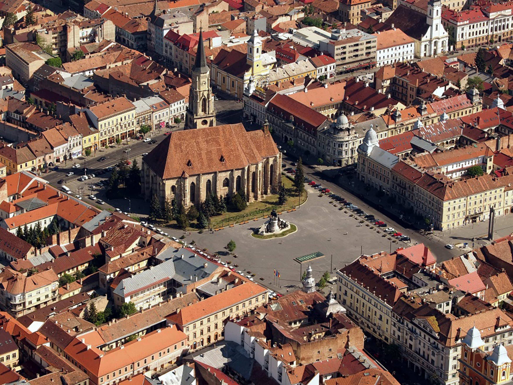
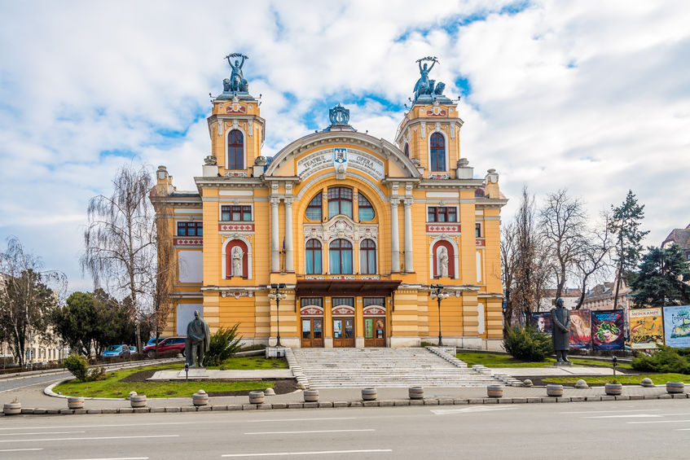

Like Erol Ozan said Some beautiful paths can’t be discovered without getting lost
,so, let's take a look at their opinions about the city.
- The blogger, Omar Oualili, said:
- From baroque buildings to bohemian cafes, Cluj is the destination in Romania that must be seen. Located in the northern part of Transylvania, the city is known for its vibrant nightlife and numerous music festivals. Don't make the same mistake. Start with the architecture, which varies between the second largest Gothic church in Romania, between the Baroque buildings and reaches the medieval towers. Explore galleries and gardens. Allocate yourself one morning for laziness and recovery after an incendiary night spent in Cluj. The city, which is full of students and artists, is delicious, the plot being guaranteed.

- The host of music festivals such as Untold or Electric Castle and also of the Transylvania International Film Festival, Cluj is both a cultural center and an academic hub where 11 universities are concentrated. The youthful air of the city can be best experienced on Piezișa Street. On the other hand, he (Cluj, n.r.) conquers through his peaceful, soothing atmosphere. Walking through its streets and observing the details of the buildings, you do not want to hurry anywhere, and in some places you have the impression that times have stopped
- Adrian from
Umblu Teleleu
said:
- Cluj is, in my opinion, one of the most beautiful cities in Romania, in the order of my preferences immediately after Bucharest. Even though I didn't spend much time here, exploring it properly, I was here 4-5 times and I managed to get an idea. What I like is the relaxed lifestyle, the view from Feleacului Hill, as well as the rich history of the place. The main place where you stop when you arrive in Cluj Napoca is Unirii Square, point 0 of the city, with the wonderful St. Michael's Church, next to the statue of Matei Corvin. Here comes my main dissatisfaction, such a beautiful place should provide information mainly in Romanian, while inside the church I could not find 2 phrases to understand. I have nothing to do with minorities, but in my country I want to understand what I see. And at Matei Corvin's house, one of the oldest buildings in Cluj, the plaque written in Hungarian is much more beautifully decorated.
- Cluj is perhaps the city with the most tourist attractions, a multitude of churches, architectural monuments, palaces, museums, the Citadel, all are wonderful and worth visiting. A big minus from my point of view are the electricity wires that steal from the charm of the city ... you can't take a picture or admire the buildings in the center because of them, which look like a spider's web above the city. However, Cluj is one of my favorite cities where I want to return more often and maybe I will have the opportunity to spend more days exploring the more marginal areas of the city, not just the center known to everyone.
 